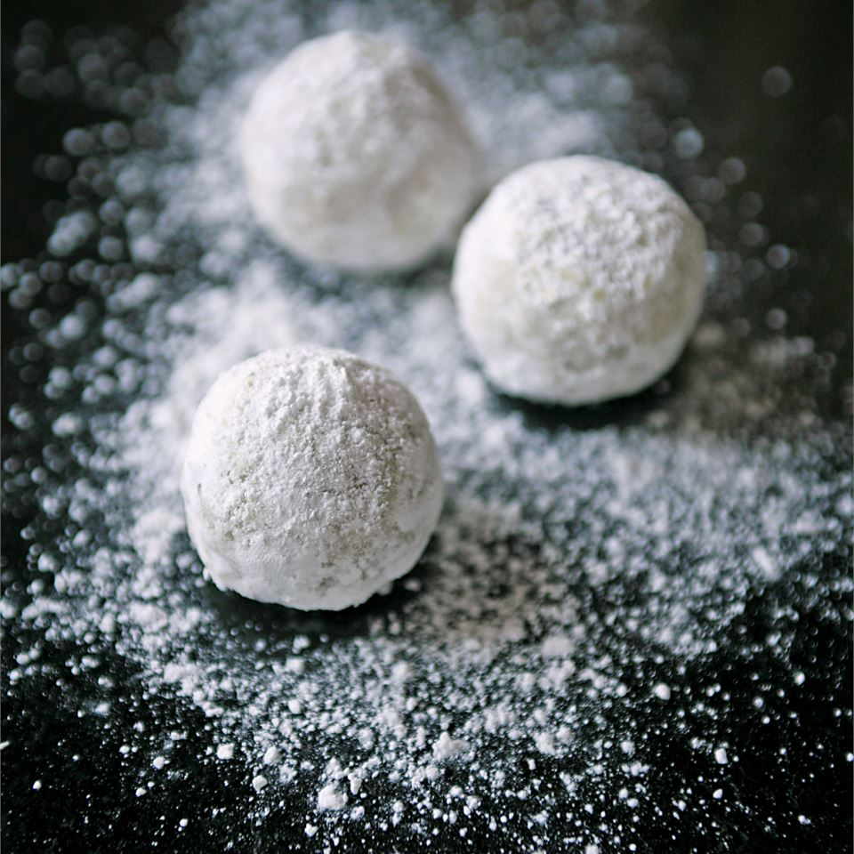

Russian Tea Cakes

This is a family recipe that's been made at Christmas time by at least 4 generations. This year will be the first for number 5!!! 'Bubba' brought it with her when she came from Lithuania. I pass it on in the true spirit of this season!
Ingredients
- 1 cup butter
- 1 teaspoon vanilla extract
- 6 tablespoons confectioners' sugar
- 2 cups all-purpose flour
- 1 cup chopped walnuts
- ⅓ cup confectioners' sugar for decoration
Directions
- Preheat oven to 350 degrees F (175 degrees C).
- In a medium bowl, cream butter and vanilla until smooth. Combine the 6 tablespoons confectioners' sugar and flour; stir into the butter mixture until just blended. Mix in the chopped walnuts. Roll dough into 1 inch balls, and place them 2 inches apart on an ungreased cookie sheet.
- Bake for 12 minutes in the preheated oven. When cool, roll in remaining confectioners' sugar. I also like to roll mine in the sugar a second time.